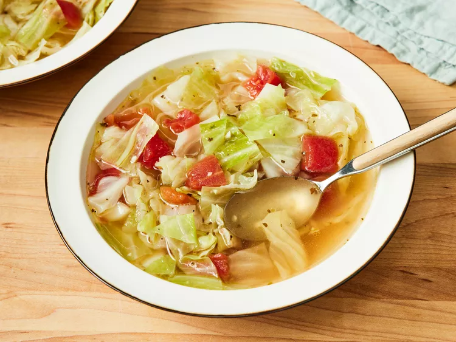
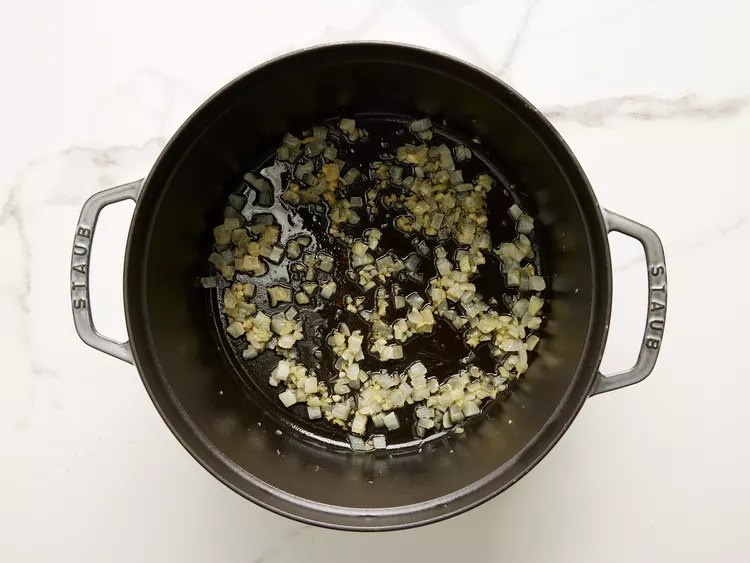
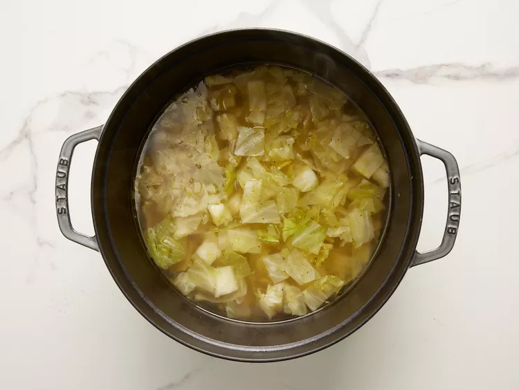
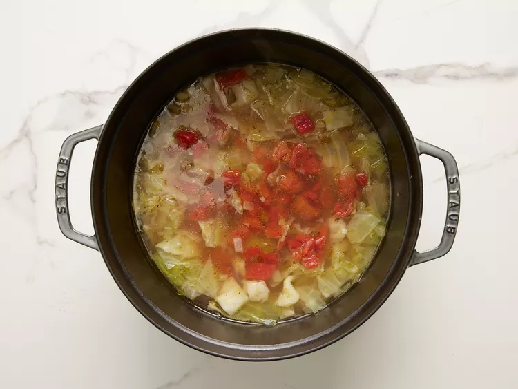

Home
Healing Cabbage Soup

Description
My body craves this cabbage soup whenever I have a cold, but it's equally delicious on a cold winter's night. It's so easy to make; add extra vegetables, leftover chicken, or rice for a more substantial meal.
Whether you're feeling under the weather or you're just in the mood for a bowlful of comfort, warm up with this cozy cabbage soup recipe. It's easy, tasty, and incredibly customizable (so you can keep it simple or get as creative as you want).
Ingredients
- 3 tablespoons olive oil
- ½ onion, chopped
- 2 cloves garlic, chopped
- 2 quarts water
- 4 teaspoons chicken bouillon granules
- 1 teaspoon salt, or to taste
- ½ teaspoon black pepper, or to taste
- ½ head cabbage, cored and coarsely chopped
- 1 (14.5 ounce) can Italian-style stewed tomatoes, drained and diced
Direction
- In a large stockpot, heat olive oil over medium heat. Stir in onion and garlic; cook until onion is transparent, about 5 minutes.

- Stir in water, bouillon, salt, and pepper. Bring to a boil, then stir in cabbage. Simmer until cabbage wilts, about 10 minutes.

- Stir in tomatoes. Return to a boil, then simmer 15 to 30 minutes, stirring often.

- Serve hot and enjoy!